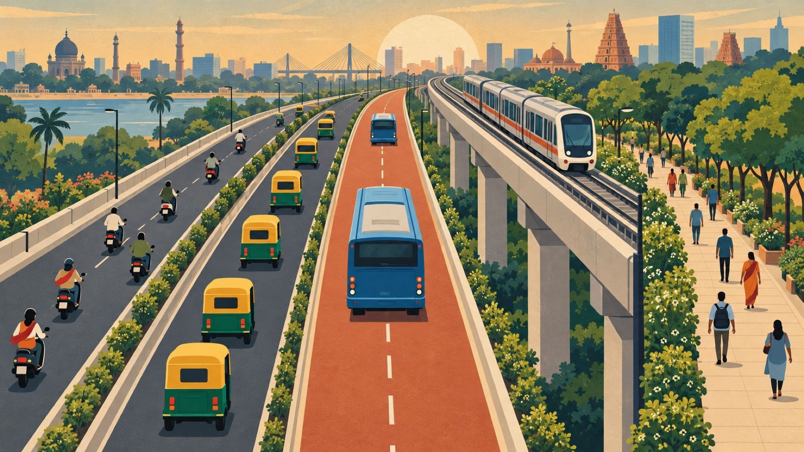

1
More people can pay
80 to 85 million households will earn ₹10 to 30 lakh a year by 2031, inside a middle class growing from 91 to 165 million households. They buy cabs, premium buses, flights and first cars.

A thesis on passenger mobility in India, FY26 to FY31. Anything that carries a living being from A to B, where its money goes, who keeps it, and where the next bets are.
Start readingEvery day Indians make 165.5 crore trips longer than a kilometre. Ninety-four in a hundred stay inside one city or town. The other six are long trips by train, bus, plane or hired car, and they carry 55% of all the distance Indians travel in a year.

The two-wheeler carries 31% of trips. Walking carries 30% and cycling 12%. Buses take 11%, autos 9% and private cars 4%. Metro, trains and app cabs are about 1% each.
Seven in ten trips are on a scooter, on foot or on a bicycle. Buses, autos, cars, trains and cabs share the remaining 27%.
That is about $70 billion. It was ₹4.5 lakh crore before COVID and should reach ₹9.2 lakh crore by FY30.
Today ₹3.2 lakh crore is spent inside cities and ₹3.0 lakh crore between them. By FY30 the two are level, because intercity grows faster, 11.3% a year against 9.6%.
Owning private cars and two-wheelers costs households far more: ₹17.9 lakh crore a year to buy, fuel, finance, insure and service them, nearly three times all fares. Another ₹4 lakh crore changes hands in used vehicles.

About 70 lakh autos and e-rickshaws carry passengers, 45 lakh on CNG or petrol and 25 lakh electric. They collect ₹1.68 lakh crore a year, and 98% of auto trips never touch an app.
A vehicle earns about ₹19,900 a month. The driver keeps 45%. Seven in ten drivers own their auto, the rest rent it for ₹350 to ₹450 a day. Three in four new e-autos are bought on credit at 14 to 30% interest.
Across the country that is ₹75,600 crore a year in driver income, larger than any company's profit in the sector.
App ride-hailing takes ₹38,500 crore from 303 crore rides, about 10 million rides a day by late 2026. Cabs bring half the money. Autos and bikes bring most of the rides.
Rapido now has about half of all rides. It got there by dropping commission: auto drivers pay ₹20 to ₹40 a day and keep the whole fare. Uber and Ola had to follow. Uber still leads in cabs, but paid ₹2,516 crore in incentives against ₹2,604 crore of commission. Ola kept high commissions and lost drivers and riders. Namma Yatri started the zero-commission model on an open network.
BluSmart, the all-electric cab company, died of fraud in 2025, not of its model. Its numbers never proved the model either: it lost ₹470 crore on ₹172 crore of revenue in FY24. Riders moved to Evera, Snap-E and Uber Black, so the demand was real.

City and school buses take ₹66,500 crore. State-run city bus corporations lose about ₹12,500 crore a year in cash. India runs about a tenth of the city buses it needs, 400+ cities have no organised transit, and 5.8 lakh buses reach end of life by FY30.
School and college buses alone take ₹27,500 crore, carrying 1.5 crore students at ₹1,500 to ₹2,200 a month, and the market grows about 8% a year.
Metro systems run in 21 cities. Delhi carries almost half of the 1.12 crore daily riders. Smaller-city metros carry only 10 to 31% of the riders they were planned for.
Companies spend ₹22,500 crore moving staff to and from offices. Self-drive rentals and car leases add ₹9,800 crore, and suburban trains ₹4,000 crore.

Planes take ₹1.12 lakh crore, but this market is closed. IndiGo and Air India hold over 91%, it is heavily regulated, it needs billions to enter, and IndiGo made a loss in FY26 once leases are counted.
Trains take ₹76,000 crore and lose money on passengers. Freight pays for it.
Buses take ₹75,000 crore: ₹47,500 crore state-run and ₹27,400 crore private. Private coaches grew 24.5% last year. Premium AC sleepers are now 55 to 60% of private trips. They charge about 2.5x the fare per km, run 78 to 85% full and earn 12 to 15% margins. Two in three riders are 18 to 36, and only about 19% of bus tickets are booked online.
Outstation cabs take ₹37,500 crore, and 70% are still booked through local agents.
Taken together, passenger transport companies lose money. Intercity rail loses ₹11,400 crore, city buses ₹6,740 crore, intercity buses ₹6,710 crore, suburban rail ₹1,800 crore and ride-hailing apps ₹1,540 crore.
Airlines show ₹6,720 crore of operating profit, but leases and depreciation eat it, so that money is out of reach.
IRCTC's profit is not a model to copy. It is a state ticketing monopoly, and Indian Railways buys the trains and takes the loss.
The private profits that hold up belong to companies that pool scattered supply: MakeMyTrip and redBus for buses and travel, ixigo for small-town rail and bus, and MoveInSync for office commutes at a 34% margin.
Over five years an e-auto costs ₹3.29 a km against ₹5.51 for CNG, and its driver takes home ₹8,965 more a month. An EV cab costs ₹6.00 a km against ₹7.58.
The open risk is the battery. Nobody knows what it is worth after five Indian summers. Lenders who track the vehicle remotely keep bad loans at 1.5 to 2.5%. The rest see 3.5 to 5.5%.
Outside investors put $1.15 billion into Indian passenger mobility from FY23 to November 2026, across 86 deals: ride-hailing 52%, EV fleets and shared bikes 33%, bus and commute tech 15%. Uber's parent separately put in $330 million.
Rapido is valued at $3 billion and Namma Yatri at ₹500 crore. Ola has been marked down from $7.3 billion to about $1.5 billion.
Listed booking platforms trade at high multiples: MakeMyTrip at 31x EBITDA, ixigo at 66x.
Only 42% of working women travel more than a kilometre to work, against 62% of men, and they spend 36% less doing it. That is not because they want to travel less. The options don't work for them.
In cities 57% of working men ride a two-wheeler against 19% of working women, and women hold under 18% of two-wheeler licences. So women walk more, take the bus more than twice as often and take autos more than twice as often. Salaried women use cabs more than men, mostly after 8 PM.
Women already pay more for the same journey. Across Indian metros they spend about 21% more to cover the same distance as men. Delhi is an outlier on women's safety: there, trips were 38% shorter but cost 54% more, so the national premium is likely nearer 21%.
A World Bank study of Delhi University students found women paid ₹17,500 a year extra to use a safer route, 75% more than men were willing to pay.
When Karnataka made buses free for women, their daily trips on state buses rose from 37.5 lakh to 67 lakh, and their ticketed trips in Bengaluru more than doubled. Delhi's free buses saved half of women riders ₹500 to ₹1,000 a month. Demand was there all along, priced out.
Forty percent of urban women feel unsafe in their city, and public transport is the second most common place for harassment. Women are 45% of Bengaluru metro riders: 47 to 48% at well-lit stations, 40 to 42% at chaotic interchanges like Majestic. In Indore, 84% of women felt safe on dedicated BRT buses but only 3 to 15% on crowded ordinary ones.
Men park bikes at metro stations. Women pay more for a solo auto to reach the same train. 77% of women say poor first- and last-mile access keeps them off public transport.

Women barely exist as drivers. In one delivery-platform sample, 0.8% of drivers were women. Women auto drivers in a Chennai survey of 220 have a median age of 38. 91% are mothers, 31% single mothers and 42% the only earner. 93% carry loans, 56% save nothing and only 19% have insurance.
They want steady bookings, no unpaid pickups and an app that works. Harassment, family opposition, no toilets and incentives that reward long late shifts push them out. Women-only premiums carry a warning too: Mumbai riders complained that Rapido's Bike Pink cost more than a normal bike taxi.
More women may be on the way. Urban women's workforce participation rose from 20.4% to 27.7% since FY18, and the Labour Ministry targets 55% nationally by 2030.

Road crashes killed 1.77 lakh people in 2024 and 1.83 lakh in 2025. Nearly half were on two-wheelers and a fifth were walking. Metro has almost none.
The rules are still forming. The 2025 aggregator rules give drivers at least 80% of the fare and cap surge at 2x, but most states haven't enforced them. Bike taxis are legal state by state. Five states tax platforms 1 to 5% for gig worker welfare, which daily-pass apps mostly escape.
States pay private bus operators 2 to 6 months late. A central fund now guarantees payment on 38,000+ e-buses, but not on diesel or CNG contracts.

80 to 85 million households will earn ₹10 to 30 lakh a year by 2031, inside a middle class growing from 91 to 165 million households. They buy cabs, premium buses, flights and first cars.
Bikes and autos are 78% of app rides. In small towns 90% of app trips cost ₹25 to 70. The next hundred million riders are price-sensitive and ride two or three wheels.
Daily passes replace commissions. The driver is now the customer, and the money goes to whoever makes the driver's day most productive.
One in two three-wheelers sold is already electric. Private e-cars get no central subsidy.
AC sleepers lead, young travellers pay for comfort, and expensive flights and rail waitlists push people onto the road.
They pay private companies per km for buses while expanding free fares.
Insurance, fare floors and welfare taxes raise platform costs and protect drivers.
Used cars sell 1.4x as often as new ones, and drivers lease EVs at ₹450 a day.
Every bet needs someone who already pays. Six groups do. The seventh, women riders, pays a premium today but has not yet shown it will pay for anything new.
A tenth of the city buses needed, 400+ cities with no transit, 5.8 lakh buses retiring by FY30, and private intercity buses growing 24.5% with 81% of tickets still offline.
₹1.68 lakh crore and 70 lakh vehicles almost entirely offline. Drivers pay 14 to 30% for credit, and EVs save ₹8,965 a month that most can't yet capture.
Size unknown, but free fares nearly doubled their trips and they already pay a pink tax. Women ride buses and autos most, so this runs through the first two gaps rather than standing as a separate market.
Growth of 24.5%, 2.5x fare per km, 80% full, 12 to 15% margins and young buyers.
Drivers already borrow. The gap is the price of money and battery life, and lenders who track vehicles keep bad loans low. Like Akshayakalpa with dairy farmers: make the driver stronger and everything downstream improves.
₹27,500 crore of buses growing 8%, parents who pay, new safety rules, and short daily runs that suit overnight-charged EVs.
The fund guarantees payment on 38,000+ e-buses, removing the 2 to 6 month delays states impose elsewhere.
Bundle finance, insurance, charging, health cover and steady bookings for 70 lakh drivers. Only 19% of women drivers have insurance, and welfare laws now push platforms to cover drivers.
Shared routes, stands and UPI, without forcing every ride into an app.
If urban women's workforce participation keeps rising, they become the largest group of new commuters, moving by bus, auto and foot. Safety and reliability are the product.
Where metros underperform, private electric buses and e-rickshaw feeders fill the gap.

Women's travel and safety: MoSPI / NSO NHTS FY26; Ola Mobility Institute, 11-city Women and Mobility study (2019); Girija Borker / World Bank, Safety First (2021, Delhi University students); NCW, NARI 2025; WRI India, Women Move: Bengaluru Namma Metro (Jan 2026); Safetipin multi-city audits. Workforce participation: MoSPI PLFS and Ministry of Labour 2030 target.
Household incomes to 2031: PRICE, ICE 360° surveys. Ownership costs: SIAM, FADA, ACMA, PPAC, CRIF High Mark Wheels Report (Jun 2026), IRDAI FY25. Regulation: MoRTH MVAG 2025; Maharashtra Bike-Taxi Rules 2025; Karnataka and Telangana gig worker acts; MHI PM E-DRIVE and PM e-Bus Sewa PSM guidelines. Smaller-city metro ridership: IIT Delhi / Infravision Foundation and UITP India audits.
India moves on scooters and on foot, its public transit loses money, and the money that holds up sits with drivers and with companies that pool scattered supply. The largest gaps are buses and the offline auto economy, and women's mobility runs through both.